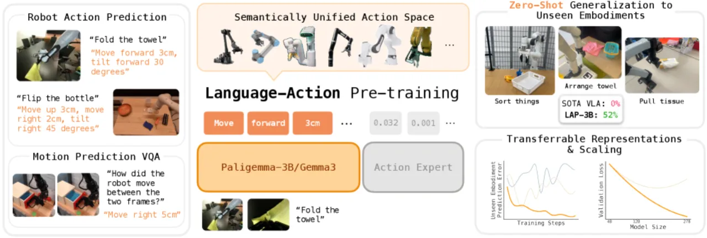
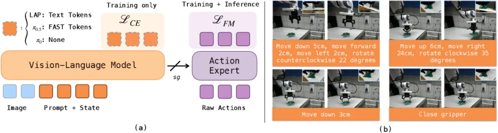
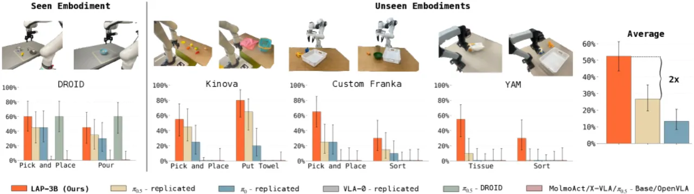
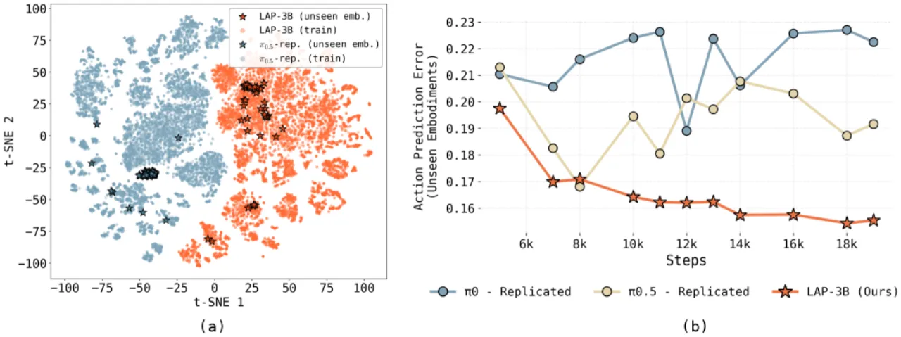
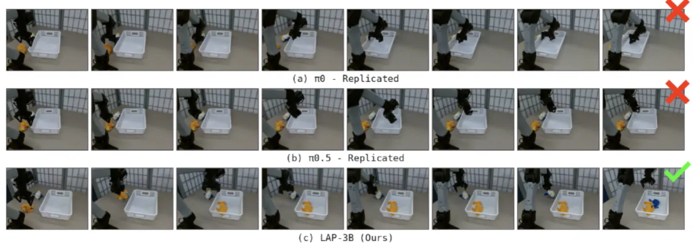

LAP 提出"语言动作（language-action）"表示：将末端执行器的运动直接编码为自然语言短语（如 "move forward 5 cm"），从而使动作监督信号与 VLM 的预训练分布对齐。以此训练的 LAP-3B 在 3 个从未见过的机械臂上实现平均超 50% 的零样本成功率，比最强现有 VLA 基线提升约 2 倍；且仅需约 2.5× 更少的演示样本即可达到相当的微调性能。
尽管 VLA 模型已在多机器人混合数据集上大规模预训练，"state-of-the-art VLAs still rarely function zero-shot on new robots"——哪怕只是换了一个夹爪或调整了摄像头位置，模型就会失效。问题根源在于：现有方法将 VLM 微调为直接预测连续动作或离散控制 token，这造成了"distributional mismatch"，因为 VLM 的预训练从未接触过电机级高频控制信号，也无法从这些信号中提取任何跨机器人通用的语义结构。
"Zero-shot cross-embodiment transfer depends critically on how we adapt a pre-trained VLM for motor control."

现有的五个开源 VLA（π0.5-DROID、π0.5-Base、X-VLA、MolmoAct、OpenVLA）在未见机器人上均完全失效，成功率均为 0%。这表明简单地增大数据规模并不能解决跨机器人泛化问题，关键在于动作表示的选择。
LAP 的核心思路是：用结构化的自然语言短语描述末端执行器的运动（"language-action"），将该语言动作作为 VLM 的监督目标，使动作预测落回 VLM 擅长的语言生成任务上。同时配置一个轻量级 diffusion 动作专家将语言动作解码为连续控制信号，并通过"knowledge insulation"阻断梯度回传，保护 VLM 骨干的表征质量。

语言动作采用固定模板 "<verb> <direction> <magnitude> <unit>"，例如 "move forward 5 cm" 或 "tilt left 20 degrees"，确定性地描述末端执行器的运动。该表示无需学习 tokenizer，直接由原始动作数据按坐标约定解析生成。其设计优势在于：语义结构与自然语言空间对齐，使 VLM 的预训练知识（方向感、数量感）可直接复用于跨机器人动作预测。
LAP-3B 由两个模块组成：① VLM 骨干（PaliGemma-3B）：以 cross-entropy 损失在语言动作 token 序列上训练，输出离散语言动作；② 轻量级 diffusion 动作专家：以 flow-matching 目标将语言动作解码为连续 7-DoF 控制信号，支持 25 Hz 实时执行。两模块之间通过 knowledge insulation 截断反向传播，防止动作专家的连续动作损失污染 VLM 骨干已习得的通用视觉-语言表征。
额外引入一个运动预测辅助任务（motion-prediction VQA）：给定两帧图像，模型预测描述其位移的语言动作。该目标作为逆向动力学自监督，进一步增强 VLM 骨干的动作感知能力。协同训练后 LAP-3B+VQA 在 LIBERO 上达到 97.2%，高于无 VQA 版本的 96.8%。
训练数据混合：Open X-Embodiment（85.26%）+ MolmoAct（1.73%）+ 其他。在 64 块 TPU v6e 上训练约 10 小时，遍历完整数据集约 0.65 个 epoch，学习率 1×10⁻⁴（线性 warmup），批大小 2048。
实验在 4 种机械臂（1 个训练时见过 + 3 个全新）上进行，共设计 6 类真实操作任务，累计超过 1300 次真机试验。基线分为两类：① 现有开源 VLA（π0.5-DROID/Base、X-VLA、MolmoAct、OpenVLA）；② 使用相同架构与数据重新训练的 replicated 基线（π0.5-replicated、π0-replicated、VLA-0-replicated）。

| Embodiment | 是否训练时见过 | LAP-3B | π0.5-replicated | π0-replicated |
|---|---|---|---|---|
| DROID | 是 | ~42% | ~27% | ~27% |
| Custom Franka | 否 | ~55% | ~25% | ~15% |
| YAM | 否 | ~50% | ~20% | ~10% |
| Kinova | 否 | ~52% | ~18% | ~8% |
在 LIBERO 仿真基准上，LAP-3B 仅需 1 个 epoch 就达到 78% 成功率，6 个 epoch 达到 96.8%，显著快于基线。在真机任务（YAM 上的 "Hang Tape on Rack"）上，LAP-3B 使用约 20 个演示样本即可达到 50% 任务进度，而基线需要约 50 个演示。整体来看，LAP-3B "achieves comparable task performance using approximately 2.5× fewer demonstrations."
| 方法 | Spatial | Object | Goal | LIBERO-10 | 平均 |
|---|---|---|---|---|---|
| X-VLA | 98.2 | 98.6 | 97.8 | 97.6 | 98.1 |
| TraceVLA | 84.6 | 85.2 | 75.1 | 54.1 | 74.8 |
| LAP-3B | 98.2 | 99.0 | 98.8 | 91.2 | 96.8 |
| LAP-3B + VQA Co. | 99.0 | 99.0 | 97.2 | 93.4 | 97.2 |


论文 "focuses only on zero-shot transfer across single-arm manipulators"。作者指出 LAP 原则上可扩展至双臂系统以及缺乏精确控制信号的数据源（如人体姿态、UMI 数据、纯视频），但这些方向尚待系统探索。
LAP-3B 目前尚未在"requiring substantially higher control frequency or extreme precision"的任务上测试，例如快速反应控制或精细柔性物体操作。当前以 25 Hz 运行，是否满足此类场景的需求尚不明确。
（inferred from design）将连续动作离散化为自然语言模板会引入量化误差。论文指出语言动作"naturally tolerate lower-quality labels"，这在利用噪声数据时是优势，但在需要亚毫米级精度的任务中可能构成瓶颈。对此影响的系统性研究仍属开放问题。